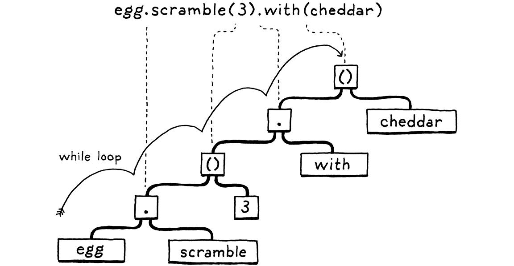
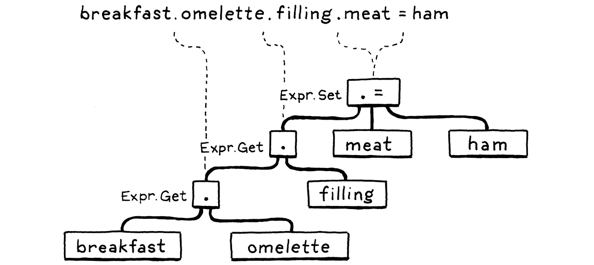
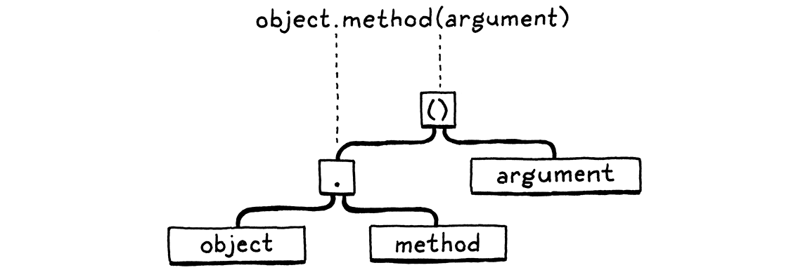
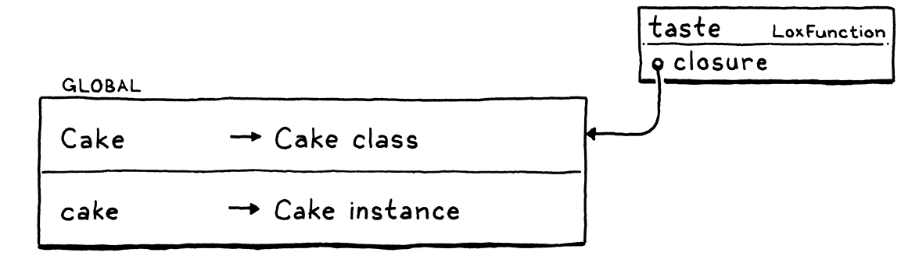
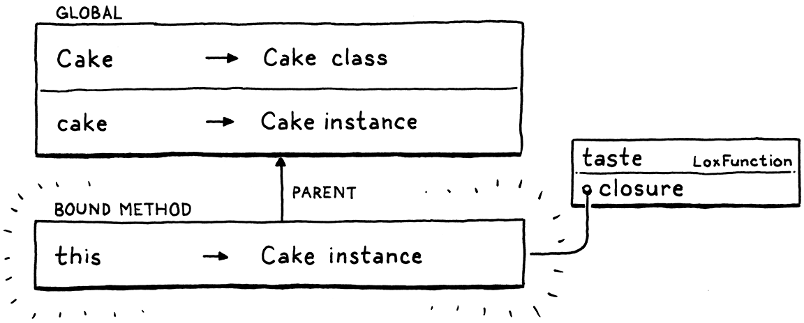
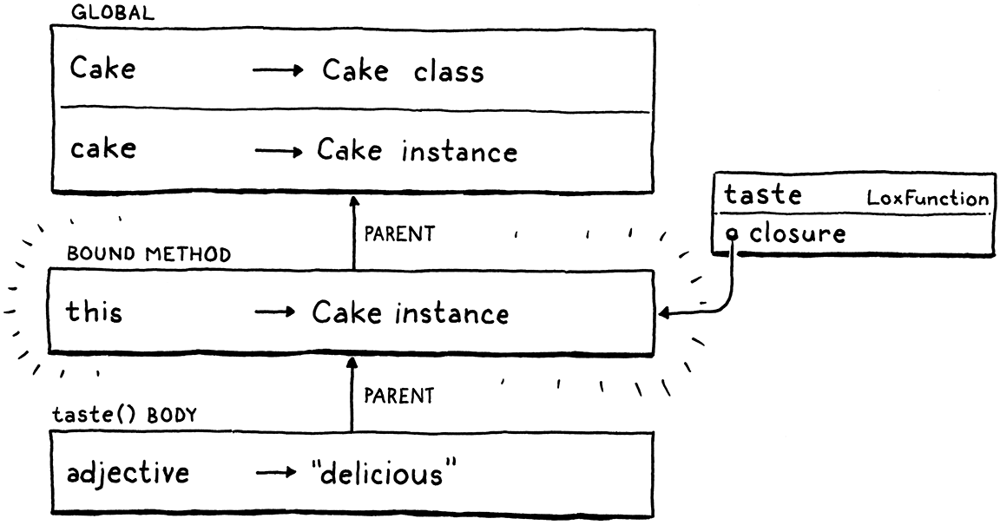

类
如果没能彻底了解一件事物的本质，你就没有权利去爱它或恨它。伟大的爱源于对所爱之物的深刻 认识；如果你对它知之甚少，你就只能爱它一点点，或者根本不爱。
列奥纳多·达·芬奇（Leonardo da Vinci）
我们已经走到第十一章，你机器上这个解释器差不多是一门完整的脚本语言了。它可以用上一两个像列表和映射这样的内建数据结构，也肯定需要一个做文件 I/O、读用户输入之类的核心库。但语言本身已经够用了。我们有了那么一门小型过程式语言，和 BASIC、Tcl、Scheme（不含宏）、以及早期的 Python 和 Lua 是同一路子。
如果这是 80 年代，我们就到此为止。但今天，很多流行的语言都支持「面向对象编程」。把这东西加进 Lox，会给用户一套熟悉的工具来写更大的程序。即便你本人并不喜欢面向对象编程，本章和下一章也会帮助你理解别人是如何设计和构建对象系统的。
12 . 1面向对象编程与类
通往面向对象编程大致有三条路：类、原型，以及多重分派。类出现得最早，也是最流行的风格。随着 JavaScript（以及次要的 Lua）的兴起，原型的知名度比过去高多了。以后我会再谈这些。对 Lox，我们走的是，呃，老路子。
既然你已经和我一起写了大约一千行 Java 代码，我假设你不需要面向对象方面的详细入门介绍。主要目标是把数据和作用于数据的代码打包在一起。用户通过声明一个类来做到这一点，这个类：
-
暴露出一个构造函数，用来创建并初始化该类的新实例
-
提供一种在实例上存储和访问字段的方式
-
定义一组由该类所有实例共享、作用于各实例自身状态的方法
这已经是最精简的版本了。大多数面向对象语言——一路追溯到 Simula——也都有继承，以便在类之间复用行为。我们会在下一章加上这个。就算先不算它，我们仍有大量内容要过。这一章很大，而且在所有这些零件凑齐之前一切都还没完全拼起来，所以攒点体力。
12 . 2类声明
照惯例，我们从语法开始。一条 class 语句引入一个新名字，所以它住在 declaration 文法规则里。
declaration → classDecl | funDecl | varDecl | statement ; classDecl → "class" IDENTIFIER "{" function* "}" ;
新的 classDecl 规则用到了我们之前定义的 function 规则。帮你复习一下：
function → IDENTIFIER "(" parameters? ")" block ; parameters → IDENTIFIER ( "," IDENTIFIER )* ;
用普通话说，一条类声明就是 class 关键字，后面跟类名，再跟一个花括号包起来的函数体。那个函数体里是一列方法声明。和函数声明不同，方法前面没有 fun 关键字。每个方法就是一个名字、参数列表和函数体。举个例子：
class Breakfast { cook() { print "Eggs a-fryin'!"; } serve(who) { print "Enjoy your breakfast, " + who + "."; } }
和大多数动态类型语言一样，字段不会在类声明里显式列出。实例就是些松松垮垮的数据袋，你可以随随便便用普通命令式代码往里加字段。
在我们的 AST 生成器里，classDecl 文法规则拿到了它自己的语句节点。
"Block : List<Stmt> statements",
在 main() 内
"Class : Token name, List<Stmt.Function> methods",
"Expression : Expr expression",
它存下类名和函数体里的方法。方法由我们已有的 Stmt.Function 类表示，那个类我们用来做函数声明的 AST 节点。这样我们就拿到了描述一个方法所需的全部状态：名字、参数列表和函数体。
类可以出现在任何允许具名声明的地方，由开头的 class 关键字触发。
try {
在 declaration() 内
if (match(CLASS)) return classDeclaration();
if (match(FUN)) return function("function");
它调用：
加在 declaration() 之后
private Stmt classDeclaration() { Token name = consume(IDENTIFIER, "Expect class name."); consume(LEFT_BRACE, "Expect '{' before class body."); List<Stmt.Function> methods = new ArrayList<>(); while (!check(RIGHT_BRACE) && !isAtEnd()) { methods.add(function("method")); } consume(RIGHT_BRACE, "Expect '}' after class body."); return new Stmt.Class(name, methods); }
这比我们写过的大多数解析方法都要复杂一些，但它大致遵循文法。我们已经吃掉了 class 关键字，所以接下来找预期的类名，然后是开头的花括号。进入函数体后，我们不断解析方法声明，直到碰上收尾的花括号。每个方法声明都由一次 function() 调用来解析，那个函数是我们引入函数的那一章里定义的。
和解析器里任何开放式循环一样，我们也检查是否碰到了文件末尾。正确代码里不会发生这种事，因为类末尾应该有个收尾的花括号；但这能确保解析器在用户有语法错误、忘了正确结束类体时，不会卡在死循环里。
我们把名字和方法列表包进一个 Stmt.Class 节点，就完成了。以前我们会直接跳进解释器，但现在我们需要先把这个节点过一遍 resolver。
加在 visitBlockStmt() 之后
@Override public Void visitClassStmt(Stmt.Class stmt) { declare(stmt.name); define(stmt.name); return null; }
我们暂时不打算处理方法本身的解析，所以眼下要做的只是用名字声明这个类。把类声明成局部变量并不常见，但 Lox 允许，所以我们得正确处理。
现在我们解释这条类声明。
加在 visitBlockStmt() 之后
@Override public Void visitClassStmt(Stmt.Class stmt) { environment.define(stmt.name.lexeme, null); LoxClass klass = new LoxClass(stmt.name.lexeme); environment.assign(stmt.name, klass); return null; }
这看起来和我们执行函数声明时类似。我们在当前环境里声明类名。然后我们把类的语法节点变成 LoxClass，也就是类的运行时表示。我们绕回来，把类对象存进我们先前声明的那个变量里。这个两阶段的变量绑定过程，使得类的方法内部可以引用这个类。
我们会在本章里不断改进它，但 LoxClass 的第一版长这样：
新建文件
package com.craftinginterpreters.lox; import java.util.List; import java.util.Map; class LoxClass { final String name; LoxClass(String name) { this.name = name; } @Override public String toString() { return name; } }
基本上就是一个名字的包装器。我们连方法都还没存。不算多有用，但它确实有一个 toString() 方法，好让我们写个简单脚本，验证类对象确实被解析和执行了。
class DevonshireCream { serveOn() { return "Scones"; } } print DevonshireCream; // Prints "DevonshireCream".
12 . 3创建实例
我们有类了，但它们还什么也做不了。Lox 没有可以直接在类本身上调用的「静态」方法，所以没有真正的实例，类就毫无用处。因此实例是下一步。
虽然 OOP 语言之间有些语法和语义相当标准，但创建新实例的方式却不一样。Ruby 沿袭 Smalltalk，通过在类对象本身上调用一个方法来创建实例，这是一种递归地优雅的方式。有些语言，比如 C++ 和 Java，有个专门的 new 关键字用来生出一个新对象。Python 则让你像调用函数一样「调用」类本身。（JavaScript，一如既往地古怪，两种都沾一点。）
我对 Lox 采取了一种最简做法。我们已经有类对象，也已经有函数调用，所以我们就用类对象上的
调用表达式来创建新实例。就好像一个类是个工厂函数，能生产自己的实例。这在我看来很优雅，
也省掉了引入 new 之类语法的需要。因此我们可以跳过前端，直接进入运行时。
现在，如果你试着这样写：
class Bagel {} Bagel();
你会得到一个运行时错误。visitCallExpr() 会检查被调用对象是否实现了 LoxCallable，然后报错，因为 LoxClass 没有实现。还没有呢，就是说。
import java.util.Map;
替换 1 行
class LoxClass implements LoxCallable {
final String name;
实现那个接口需要两个方法。
加在 toString() 之后
@Override public Object call(Interpreter interpreter, List<Object> arguments) { LoxInstance instance = new LoxInstance(this); return instance; } @Override public int arity() { return 0; }
有意思的是 call()。当你「调用」一个类时，它为那个被调用的类实例化一个新的 LoxInstance 并返回它。arity() 方法则是解释器用来校验你传给一个可调用对象的实参个数是否正确的方式。目前我们说你不能传任何实参。等讲到用户定义的构造函数，我们再来重新审视这件事。
这就引出了 LoxInstance，也就是 Lox 类实例的运行时表示。同样，我们的第一个实现从很小的规模起步。
新建文件
package com.craftinginterpreters.lox; import java.util.HashMap; import java.util.Map; class LoxInstance { private LoxClass klass; LoxInstance(LoxClass klass) { this.klass = klass; } @Override public String toString() { return klass.name + " instance"; } }
和 LoxClass 一样，它的骨架相当简陋，但我们才刚起步。如果你想试试，这有个脚本可以跑：
class Bagel {} var bagel = Bagel(); print bagel; // Prints "Bagel instance".
这个程序做不了多少事，但它开始能做点事情了。
12 . 4实例上的属性
我们有实例了，该让它们变得有用起来。我们站在一个岔路口。可以先加行为——方法；也可以先从状态入手——属性。我们走后一条路，因为正如 后面会看到的，这两者会以有趣的方式纠缠在一起，先把属性跑通会更容易理清它们。
Lox 在处理状态上追随 JavaScript 和 Python。每个实例都是一个开放的、具名的值集合。实例所属类上的方法可以访问和修改属性，但外部代码也可以。属性用 . 语法访问。
someObject.someProperty
一个表达式后面跟 . 和一个标识符，就是从该表达式求值得到的那个对象上读出同名的属性。那个点号和函数调用表达式里的圆括号优先级相同，所以我们把文法里现有的 call 规则替换成：
call → primary ( "(" arguments? ")" | "." IDENTIFIER )* ;
在一个基本表达式之后，我们允许任意混合的、带括号和带点的调用与属性访问序列。「属性访问」这个说法太拗口，所以从现在起我们管它们叫「get 表达式」。
12 . 4 . 1Get 表达式
语法树节点是：
"Call : Expr callee, Token paren, List<Expr> arguments",
在 main() 内
"Get : Expr object, Token name",
"Grouping : Expr expression",
遵循文法，新的解析代码放进我们已有的 call() 方法。
while (true) {
if (match(LEFT_PAREN)) {
expr = finishCall(expr);
在 call() 内
} else if (match(DOT)) { Token name = consume(IDENTIFIER, "Expect property name after '.'."); expr = new Expr.Get(expr, name);
} else {
break;
}
}
那里的外层 while 循环对应文法规则里的 *。我们随着词法单元一路小跑，把遇到的括号和点拼成一串调用与 get，像这样：

新的 Expr.Get 节点的实例进入 resolver。
加在 visitCallExpr() 之后
@Override public Void visitGetExpr(Expr.Get expr) { resolve(expr.object); return null; }
好吧，没什么内容。由于属性是动态查找的，它们不会被解析。解析期间我们只递归进入点号左边的那个表达式。真正的属性访问发生在解释器里。
加在 visitCallExpr() 之后
@Override public Object visitGetExpr(Expr.Get expr) { Object object = evaluate(expr.object); if (object instanceof LoxInstance) { return ((LoxInstance) object).get(expr.name); } throw new RuntimeError(expr.name, "Only instances have properties."); }
首先，我们对那个属性所属的表达式求值。在 Lox 里，只有类的实例才有属性。如果对象是别的类型，比如一个数字，在它身上调用 getter 就是运行时错误。
如果对象是 LoxInstance，我们就让它去查找这个属性。是时候给 LoxInstance 一些真正的状态了。用一个映射就够了。
private LoxClass klass;
在类 LoxInstance 内
private final Map<String, Object> fields = new HashMap<>();
LoxInstance(LoxClass klass) {
映射里的每个键是一个属性名，对应的值就是该属性的值。要在实例上查找一个属性：
加在 LoxInstance() 之后
Object get(Token name) { if (fields.containsKey(name.lexeme)) { return fields.get(name.lexeme); } throw new RuntimeError(name, "Undefined property '" + name.lexeme + "'."); }
我们需要处理的一个有意思的边界情况是：如果实例没有那个名字的属性，会怎么样。我们可以悄悄返回某个像 nil 的哑值，但以我对 JavaScript 这类语言的经验来看，这种行为掩盖 bug 的次数远多于带来有用的时候。所以我们改成一个运行时错误。
所以我们做的第一件事，是看实例到底有没有那个名字的字段。只有确实有才返回它。否则我们抛错。
注意我是怎么从说「属性」切换到说「字段」的。两者有个微妙的差别。字段是直接存在实例里的、有名字的状态位。属性是那些 get 表达式可能返回的、呃，那些东西。每个字段都是属性，但正如 后面会看到的 以后，不是每个属性都是字段。
理论上我们现在能在对象上读属性了。但既然还没法真正往实例里塞任何状态，就没有字段可读。在测试读之前，我们必须先支持写。
12 . 4 . 2Set 表达式
Setter 用和 getter 一样的语法，只是出现在赋值左侧。
someObject.someProperty = value;
在文法那边，我们扩展赋值规则，允许左侧出现带点的标识符。
assignment → ( call "." )? IDENTIFIER "=" assignment | logic_or ;
和 getter 不同，setter 不会串联。不过，对 call 的引用允许最后一个点号之前有任意高优先级的表达式，包括任意多个 getter，就像这样：

注意这里只有最后一部分，也就是 .meat，是 setter。.omelette 和 .filling 两部分都是 get 表达式。
就像我们为变量访问和变量赋值分别做了两个 AST 节点一样，我们需要第二个 setter 节点来配我们的 getter 节点。
"Logical : Expr left, Token operator, Expr right",
在 main() 内
"Set : Expr object, Token name, Expr value",
"Unary : Token operator, Expr right",
以防你忘了，我们处理赋值的方式有点古怪。在读到 = 之前，我们很难判断一串词法单元是不是赋值的左侧。现在我们的赋值文法规则左侧有 call，它可以展开成任意大的表达式，于是那个最终的 = 可能离「我们必须知道正在解析一个赋值」的位置隔着很多词法单元。
我们用的取巧办法是把左侧当作普通表达式来解析。然后，当我们在它后面碰到等号时，就拿起已经解析好的那个表达式，把它转换成赋值对应的正确语法树节点。
我们给那个转换再加上一个分支，用来处理把左侧的 Expr.Get 表达式变成对应的 Expr.Set。
return new Expr.Assign(name, value);
在 assignment() 内
} else if (expr instanceof Expr.Get) { Expr.Get get = (Expr.Get)expr; return new Expr.Set(get.object, get.name, value);
}
这就是解析部分。我们把那个节点推进 resolver。
加在 visitLogicalExpr() 之后
@Override public Void visitSetExpr(Expr.Set expr) { resolve(expr.value); resolve(expr.object); return null; }
和 Expr.Get 一样，属性本身是动态求值的，所以那里没什么好解析的。我们要做的只是递归进入 Expr.Set 的两个子表达式：被设置属性的那个对象，以及它被设成的那个值。
这就引向解释器。
加在 visitLogicalExpr() 之后
@Override public Object visitSetExpr(Expr.Set expr) { Object object = evaluate(expr.object); if (!(object instanceof LoxInstance)) { throw new RuntimeError(expr.name, "Only instances have fields."); } Object value = evaluate(expr.value); ((LoxInstance)object).set(expr.name, value); return value; }
我们对被设置属性的那个对象求值，并检查它是不是 LoxInstance。如果不是，那就是运行时错误。否则，我们对被设置的那个值求值，并把它存到实例上。这依赖 LoxInstance 里的一个新方法。
加在 get() 之后
void set(Token name, Object value) { fields.put(name.lexeme, value); }
这里没有什么真正的魔法。我们直接把这些值塞进存放字段的那个 Java 映射。既然 Lox 允许在实例上自由创建新字段，就没必要去查看这个键是否已经存在。
12 . 5类上的方法
你能创建类的实例并往里塞数据，但类本身并不真的做什么。实例只是映射，所有实例都差不多。为了让它们像是某个类的实例，我们得加上行为——方法。
我们勤快的解析器已经会解析方法声明了，所以这方面没问题。方法的调用也不需要新的解析器支持。我们已经有 .（getter）和 ()（函数调用）了。一次「方法调用」就是把两者串起来。

这就引出一个有意思的问题。当这两个表达式被拆开时会发生什么？假设这个例子里的 method 是 object 所属类上的一个方法，而不是实例上的一个字段，那么下面这段代码该做什么？
var m = object.method; m(argument);
这个程序「查找」那个方法，把结果——不管那是什么——存进一个变量，然后之后再调用那个对象。这样允许吗？你能把一个方法当成实例上的函数来对待吗？
反过来呢？
class Box {} fun notMethod(argument) { print "called function with " + argument; } var box = Box(); box.function = notMethod; box.function("argument");
这个程序创建一个实例，然后往它的一个字段里存一个函数。接着它用和方法调用一样的语法去调用那个函数。这行得通吗？
不同语言对这些问题的答案不同。光是这话题就够写一篇专著。对 Lox，我们说这两个问题的答案都是「能，它确实行得通」。我们有几个理由来支撑这个决定。对于第二个例子——调用存在字段里的函数——我们想支持它，因为一等函数很有用，而把它们存在字段里是完全正常的做法。
第一个例子更冷僻。一个动机是：用户一般期望自己能把一个子表达式提取到一个局部变量里，而不改变程序的含义。你可以把这个：
breakfast(omelette.filledWith(cheese), sausage);
变成这个：
var eggs = omelette.filledWith(cheese); breakfast(eggs, sausage);
而且做的事一模一样。同理，既然方法调用里的 . 和 () 就是两个独立的表达式，那你似乎应该能把查找那部分提取到一个变量里，然后以后再调用它。我们得仔细想想你查找一个方法时得到的那个东西是什么、它怎么表现，哪怕是在这种古怪情况下：
class Person { sayName() { print this.name; } } var jane = Person(); jane.name = "Jane"; var method = jane.sayName; method(); // ?
如果你从某个实例上抓住一个方法的句柄，以后再调用它，它会「记住」自己是从哪个实例上取下来的吗？方法里的 this 还会指向那个原始对象吗？
这里还有个更病态的例子来折腾你的脑子：
class Person { sayName() { print this.name; } } var jane = Person(); jane.name = "Jane"; var bill = Person(); bill.name = "Bill"; bill.sayName = jane.sayName; bill.sayName(); // ?
最后那行会打印 “Bill”，因为那是我们调用方法时所经过的实例？还是打印 “Jane”，因为那是我们最初抓住这个方法时的实例？
Lua 和 JavaScript 里的等价代码会打印 “Bill”。那些语言其实并没有「方法」的概念。一切都算是存在字段里的函数，所以也说不清 jane 是否比 bill 更「拥有」sayName。
不过 Lox 有真正的类语法，所以我们确实知道哪些可调用的东西是方法、哪些是函数。于是，和 Python、C# 等语言一样，我们在方法第一次被抓住时就让它把 this 绑定到那个原始实例。Python 把这些叫作 bound methods（绑定方法）。
在实践中，那通常正是你想要的。如果你拿了某个对象上一个方法的引用，以便之后把它当回调来调用，你就希望记住它属于哪个实例，哪怕那个回调恰好被存在另一个对象的某个字段里。
好吧，这一大堆语义够你脑袋塞的了。先把边界情况放一边，我们回头再谈。现在先让基本的方法调用跑起来。我们已经在类体里解析方法声明了，所以下一步是解析它们。
define(stmt.name);
在 visitClassStmt() 内
for (Stmt.Function method : stmt.methods) {
FunctionType declaration = FunctionType.METHOD;
resolveFunction(method, declaration);
}
return null;
我们遍历类体里的方法，调用我们之前为处理函数声明写的 resolveFunction() 方法。唯一的区别是我们传入一个新的 FunctionType 枚举值。
NONE,
FUNCTION,
在枚举 FunctionType 内
在上一行末尾加 “,”
METHOD
}
等我们解析 this 表达式时，这会很重要。现在先别操心。有意思的部分在解释器里。
environment.define(stmt.name.lexeme, null);
在 visitClassStmt() 内
替换 1 行
Map<String, LoxFunction> methods = new HashMap<>();
for (Stmt.Function method : stmt.methods) {
LoxFunction function = new LoxFunction(method, environment);
methods.put(method.name.lexeme, function);
}
LoxClass klass = new LoxClass(stmt.name.lexeme, methods);
environment.assign(stmt.name, klass);
当我们解释一条类声明语句时，我们把类的语法表示——也就是它的 AST 节点——变成它的运行时表示。现在，我们也得对类里的方法做同样的事。每个方法声明都绽放成一个 LoxFunction 对象。
我们把所有这些包进一个映射，以方法名为键。然后存进 LoxClass。
final String name;
在类 LoxClass 内
替换 4 行
private final Map<String, LoxFunction> methods; LoxClass(String name, Map<String, LoxFunction> methods) { this.name = name; this.methods = methods; }
@Override
public String toString() {
实例存状态，类存行为。LoxInstance 有它那份字段映射，LoxClass 则拿到一份方法映射。虽然方法归类所有，但它们仍然是通过该类的实例来访问的。
Object get(Token name) {
if (fields.containsKey(name.lexeme)) {
return fields.get(name.lexeme);
}
在 get() 内
LoxFunction method = klass.findMethod(name.lexeme); if (method != null) return method;
throw new RuntimeError(name,
"Undefined property '" + name.lexeme + "'.");
在实例上查找属性时，如果我们找不到匹配的字段，就去实例所属的类上找那个名字的方法。找到了就返回它。这里「字段」和「属性」的区分就有了意义。访问一个属性时，你可能拿到一个字段——存在实例上的一小块状态——也可能命中一个定义在实例所属类上的方法。
方法就是用这个查出来的：
加在 LoxClass() 之后
LoxFunction findMethod(String name) { if (methods.containsKey(name)) { return methods.get(name); } return null; }
你大概猜得到这个方法以后会变得更有意思。现在只是在类的方法表上做一次简单映射查找，就足够我们起步了。试试看：
class Bacon { eat() { print "Crunch crunch crunch!"; } } Bacon().eat(); // Prints "Crunch crunch crunch!".
12 . 6This
我们能在对象上同时定义行为和状态，但它们还没绑在一起。在方法内部，我们没有办法访问「当前」对象——也就是方法被调用时所在的那个实例——的字段，也无法在同一个对象上调用别的方法。
要够到那个实例，它需要一个名字。Smalltalk、Ruby 和 Swift 用 “self”。Simula、C++、Java 等用 “this”。Python 按惯例用 “self”，但技术上你叫它什么都行。
对 Lox 来说，既然我们总体上遵循 Java 风格，就用 “this”。在方法体内部，一个 this 表达式求值为方法被调用时所在的那个实例。更确切地说，由于方法是先访问、再调用这两个步骤，它指向的是方法被访问时所在的那个对象。
这让我们的工作更难了。瞧瞧：
class Egotist { speak() { print this; } } var method = Egotist().speak; method();
在倒数第二行，我们从该类的一个实例上抓住对 speak() 方法的引用。那返回一个函数，而这个函数需要记住它是从哪个实例上被取下来的，好让它在以后、也就是最后一行被调用时，还能找到那个实例。
我们需要在方法被访问的那一刻把 this 拿住，以某种方式把它挂到函数上，让它在我们需要的时间内一直活着。嗯……一个能存点额外数据、挂在函数身边的东西，呃？这听起来可真像是一个闭包，对不对？
如果我们把 this 定义成某种隐藏变量，放在一个包围着「查找方法时返回的那个函数」的环境里，那么函数体中对 this 的使用以后就能找到它。LoxFunction 已经具备了抓住周围环境的能力，所以我们需要的机制都有了。
我们走一遍例子看看它是怎么工作的：
class Cake { taste() { var adjective = "delicious"; print "The " + this.flavor + " cake is " + adjective + "!"; } } var cake = Cake(); cake.flavor = "German chocolate"; cake.taste(); // Prints "The German chocolate cake is delicious!".
当我们第一次求值类定义时，我们为 taste() 创建一个 LoxFunction。它的闭包是包围类的环境，在这个例子里就是全局环境。所以我们存进类的方法映射里的那个 LoxFunction 长这样：

当我们求值 cake.taste 这个 get 表达式时，我们创建一个新环境，把 this 绑定到方法被访问时所在的对象（这里是 cake）。然后我们用与原来相同的代码、但以那个新环境作为闭包，做出一个新的 LoxFunction。

这就是求值那个方法名的 get 表达式时返回的 LoxFunction。当那个函数之后被一个 () 表达式调用时，我们照常为方法体创建一个环境。

方法体环境的父，就是我们先前为把 this 绑定到当前对象而创建的那个环境。于是方法体里对 this 的任何使用都能成功解析到那个实例。
复用我们的环境代码来实现 this，也顺手处理掉了方法与函数互动时那些有意思的情况，比如：
class Thing { getCallback() { fun localFunction() { print this; } return localFunction; } } var callback = Thing().getCallback(); callback();
比如说在 JavaScript 里，从方法内部返回一个回调是很常见的。那个回调可能想抓住并保留对原始对象——也就是方法所关联的那个 this 值——的访问权。我们已有的对闭包和环境链的支持，应该能把这一切正确处理掉。
我们来写代码。第一步是为 this 加新语法。
"Set : Expr object, Token name, Expr value",
在 main() 内
"This : Token keyword",
"Unary : Token operator, Expr right",
解析很简单，因为它就是一个单词法单元，我们的词法分析器已经把它认作保留字了。
return new Expr.Literal(previous().literal);
}
在 primary() 内
if (match(THIS)) return new Expr.This(previous());
if (match(IDENTIFIER)) {
等我们走到 resolver，就能开始看出 this 是怎么像变量一样工作的了。
加在 visitSetExpr() 之后
@Override public Void visitThisExpr(Expr.This expr) { resolveLocal(expr, expr.keyword); return null; }
我们完全像解析任何其他局部变量那样来解析它，用 “this” 作为那个「变量」的名字。当然，现在这么做还不行，因为 “this” 并没有在任何作用域里被声明。我们去 visitClassStmt() 里修掉它。
define(stmt.name);
在 visitClassStmt() 内
beginScope(); scopes.peek().put("this", true);
for (Stmt.Function method : stmt.methods) {
在我们踏进去开始解析方法体之前，我们压入一个新作用域，并在里面把 “this” 当作一个变量来定义。然后，做完时我们丢弃那个外围作用域。
}
在 visitClassStmt() 内
endScope();
return null;
现在，每当遇到一个 this 表达式（至少在方法内部），它都会解析到一个隐式作用域里的「局部变量」，而那个作用域就在方法体那个块的外面。
resolver 为 this 加了一个新的作用域，所以解释器也得为它创建一个对应的环境。记住，我们必须始终让 resolver 的作用域链和解释器的链式环境彼此保持同步。运行时，我们在实例上找到方法之后才创建那个环境。我们把先前那行直接返回方法的 LoxFunction 的代码换成：
LoxFunction method = klass.findMethod(name.lexeme);
在 get() 内
替换 1 行
if (method != null) return method.bind(this);
throw new RuntimeError(name,
"Undefined property '" + name.lexeme + "'.");
注意那个新的 bind() 调用。它长这样：
加在 LoxFunction() 之后
LoxFunction bind(LoxInstance instance) { Environment environment = new Environment(closure); environment.define("this", instance); return new LoxFunction(declaration, environment); }
没什么内容。我们在方法原有闭包的内部新建一个环境。算是闭包套闭包。当方法被调用时，它会成为方法体环境的父环境。
我们在那个环境里把 “this” 声明为一个变量，并把它绑定到给定的实例，也就是方法被访问时所在的实例。成了，返回的 LoxFunction 现在随身带着它自己那个小小的持久世界，里面 “this” 绑定着那个对象。
剩下的任务是解释那些 this 表达式。和 resolver 类似，它和处理一个变量表达式是一回事。
加在 visitSetExpr() 之后
@Override public Object visitThisExpr(Expr.This expr) { return lookUpVariable(expr.keyword, expr); }
去用之前那个蛋糕例子试试吧。不到二十行代码，我们的解释器就能处理方法内的 this，包括它与嵌套类、方法内的函数、方法句柄等各种古怪方式打交道的全部情形。
12 . 6 . 1this 的非法用法
等一下。如果你试着在方法外面用 this 会怎样？比如：
print this;
或者：
fun notAMethod() { print this; }
如果你不在方法里，就没有实例可供 this 指向。我们可以给它一个像 nil 的默认值，或者把它变成运行时错误，但用户显然搞错了。他们越早发现并修好这个错误，就会越高兴。
我们的解析这一遍很适合静态地检测这个错误。它已经能检测函数之外的 return 语句了。我们对 this 也做类似的事。仿照现有的 FunctionType 枚举，我们定义一个新的 ClassType。
}
加在枚举 FunctionType 之后
private enum ClassType { NONE, CLASS } private ClassType currentClass = ClassType.NONE;
void resolve(List<Stmt> statements) {
对，它本来可以是个布尔值。等我们讲到继承，它会拿到第三个值，所以才需要现在这个枚举。我们还加了一个对应的字段 currentClass。它的值告诉我们，在遍历语法树时我们当前是否在一个类声明里面。它一开始是 NONE，意思是「我们不在类里」。
当我们开始解析一条类声明时，我们把它改掉。
public Void visitClassStmt(Stmt.Class stmt) {
在 visitClassStmt() 内
ClassType enclosingClass = currentClass; currentClass = ClassType.CLASS;
declare(stmt.name);
和 currentFunction 一样，我们把该字段之前的值存进一个局部变量。这让我们可以搭 JVM 的便车，保存一个 currentClass 值的栈。这样即使一个类嵌套在另一个类里，我们也不会丢掉之前的值。
方法解析完之后，我们通过恢复旧值来「弹出」那个栈。
endScope();
在 visitClassStmt() 内
currentClass = enclosingClass;
return null;
当我们解析一个 this 表达式时，currentClass 字段给了我们所需的那一点数据，用来在表达式没有嵌在方法体内部时报告错误。
public Void visitThisExpr(Expr.This expr) {
在 visitThisExpr() 内
if (currentClass == ClassType.NONE) { Lox.error(expr.keyword, "Can't use 'this' outside of a class."); return null; }
resolveLocal(expr, expr.keyword);
这应该能帮助用户正确使用 this，也让我们不必在运行时于解释器里处理误用。
12 . 7构造函数与初始化器
现在我们用类几乎能做任何事了，而随着本章接近尾声，我们发现自己奇怪地关注着一个开端。方法和字段让我们能把状态和行为封装在一起，使一个对象始终保持在有效配置中。但我们怎么确保一个崭新的对象从开始就处于良好状态？
为此我们需要构造函数。我觉得它们是语言设计里最棘手的部分之一；如果你仔细审视大多数其他语言，会看到对象构造周围有裂缝，设计的接缝并不完美契合。也许「诞生的那一刻」本身就内在地乱糟糟。
「构造」一个对象其实是两个操作：
-
运行时为崭新的实例分配所需的内存。在大多数语言里，这个操作在根本层面上处于 用户代码能够触及的范围之下。
-
然后调用一段用户提供的代码，去初始化那个尚未成形的对象。
后者就是我们听到「构造函数」时通常想到的东西，但语言本身通常在我们走到那一步之前，已经替我们做了一些铺垫工作。事实上，我们的 Lox 解释器在创建一个新的 LoxInstance 对象时，已经把这一点覆盖了。
现在我们来做剩下的部分——用户定义的初始化。各种语言为「设置一个新对象」的那段代码准备了各式各样的记法。C++、Java 和 C# 用一个名字与类名相同的方法。Ruby 和 Python 把它叫作 init()。后者又好又短，所以我们就这么办。
在 LoxClass 的 LoxCallable 实现里，我们再加几行。
List<Object> arguments) {
LoxInstance instance = new LoxInstance(this);
在 call() 内
LoxFunction initializer = findMethod("init"); if (initializer != null) { initializer.bind(instance).call(interpreter, arguments); }
return instance;
当一个类被调用时，在 LoxInstance 创建之后，我们去找一个 “init” 方法。如果找到了，我们立刻像调用普通方法那样绑定并调用它。实参列表原样转发。
那个实参列表意味着我们也得微调类如何声明自己的元数。
public int arity() {
在 arity() 内
替换 1 行
LoxFunction initializer = findMethod("init"); if (initializer == null) return 0; return initializer.arity();
}
如果有初始化器，那个方法的元数就决定了你调用类本身时必须传多少个实参。不过，作为一种便利，我们并不要求类定义初始化器。如果没有初始化器，元数仍然是零。
基本就是这样了。由于我们在调用 init() 方法之前就绑定好了它，它在函数体内部能访问 this。这个，加上传给类的实参，就是让你能随心所欲搭出新实例所需的全部。
12 . 7 . 1直接调用 init()
照例，探索这块新语义地带会惊出几只怪东西。想想：
class Foo { init() { print this; } } var foo = Foo(); print foo.init();
你能通过直接调用对象的 init() 方法来「重新初始化」它吗？如果你这么做，它返回什么？一个合理的答案是 nil，因为函数体看起来返回的就是那个。
不过——而且我一般不喜欢为了迁就实现而妥协——如果我们规定 init() 方法总是返回 this（即使是被直接调用），会让 clox 的构造函数实现容易得多。为了让 jlox 与此兼容，我们在 LoxFunction 里加一点特例代码。
return returnValue.value;
}
在 call() 内
if (isInitializer) return closure.getAt(0, "this");
return null;
如果这个函数是一个初始化器，我们就覆盖真正的返回值，强行返回 this。这依赖一个新的 isInitializer 字段。
private final Environment closure;
在类 LoxFunction 内
替换 1 行
private final boolean isInitializer; LoxFunction(Stmt.Function declaration, Environment closure, boolean isInitializer) { this.isInitializer = isInitializer;
this.closure = closure;
this.declaration = declaration;
我们不能简单地把 LoxFunction 的名字看成 “init”，因为用户可能定义了同名的一个函数。那种情况下根本没有 this 可返回。为了避开那种古怪的边界情况，我们直接存下这个 LoxFunction 是否表示一个初始化器方法。这意味着我们得回头修几处创建 LoxFunction 的地方。
public Void visitFunctionStmt(Stmt.Function stmt) {
在 visitFunctionStmt() 内
替换 1 行
LoxFunction function = new LoxFunction(stmt, environment, false);
environment.define(stmt.name.lexeme, function);
对真正的函数声明，isInitializer 始终是 false。对方法，我们检查名字。
for (Stmt.Function method : stmt.methods) {
在 visitClassStmt() 内
替换 1 行
LoxFunction function = new LoxFunction(method, environment, method.name.lexeme.equals("init"));
methods.put(method.name.lexeme, function);
然后在 bind() 里——我们在那儿创建把 this 绑定到方法的闭包——我们把原方法的值一并传下去。
environment.define("this", instance);
在 bind() 内
替换 1 行
return new LoxFunction(declaration, environment, isInitializer);
}
12 . 7 . 2从 init() 返回
我们还没脱离危险区。我们一直在假设用户写的初始化器不会显式返回值，因为大多数构造函数确实不返回。那如果用户试着这样写，该怎么办：
class Foo { init() { return "something else"; } }
那肯定不会做他们想要的事，所以我们干脆把它变成一个静态错误。回到 resolver，我们给 FunctionType 再加一个 case。
FUNCTION,
在枚举 FunctionType 内
INITIALIZER,
METHOD
我们用被访问方法的名字来判断自己是否在解析一个初始化器。
FunctionType declaration = FunctionType.METHOD;
在 visitClassStmt() 内
if (method.name.lexeme.equals("init")) { declaration = FunctionType.INITIALIZER; }
resolveFunction(method, declaration);
等我们之后遍历到一条 return 语句时，我们检查那个字段，把从 init() 方法内部返回值变成一个错误。
if (stmt.value != null) {
在 visitReturnStmt() 内
if (currentFunction == FunctionType.INITIALIZER) { Lox.error(stmt.keyword, "Can't return a value from an initializer."); }
resolve(stmt.value);
我们还没完。我们静态地禁止从初始化器返回一个值，但你仍然可以写一个空的提前 return。
class Foo { init() { return; } }
那其实有时还挺有用，所以我们不想彻底禁掉它。取而代之，它应该返回 this 而不是 nil。这在 LoxFunction 里很容易修。
} catch (Return returnValue) {
在 call() 内
if (isInitializer) return closure.getAt(0, "this");
return returnValue.value;
如果我们在初始化器里执行了一条 return 语句，我们不是返回那个值（它永远是 nil），而是再次返回 this。
呼！这一长串任务做完，我们的回报是：这个小小的解释器长出了一种完整的编程范式。类、方法、字段、this 和构造函数。我们这个婴儿语言看上去已经相当成熟了。
习题
-
我们在实例上有方法，但没有办法定义可以直接在类对象本身上调用的「静态」方法。加上对它们 的支持。在方法前面加一个
class关键字来表示挂在类对象上的静态方法。class Math { class square(n) { return n * n; } } print Math.square(3); // Prints "9".
你随意怎么实现都行，但 Smalltalk 和 Ruby 用的「元类」是格外优雅的做法。提示：让 LoxClass 继承 LoxInstance，然后从那里往下做。
-
大多数现代语言支持「getter」和「setter」——类上看像字段读写、实际却执行用户定义代码的 成员。扩展 Lox 以支持 getter 方法。它们在声明时没有参数列表。当访问某个名字的属性时， getter 的函数体就会被执行。
class Circle { init(radius) { this.radius = radius; } area { return 3.141592653 ** this.radius ** this.radius; } } var circle = Circle(4); print circle.area; // Prints roughly "50.2655".
-
Python 和 JavaScript 允许你从对象自身的方法之外自由访问它的字段。Ruby 和 Smalltalk 则 封装实例状态。只有类上的方法能访问原始字段，由类来决定哪些状态被暴露。大多数静态类型 语言提供
private和public这样的修饰符，来按成员粒度控制一个类的哪些部分对外可 访问。这些做法之间的取舍是什么？为什么一门语言可能偏好其中一种？
设计说明：原型与力量
在这一章里，我们引入了两个新的运行时实体：LoxClass 和 LoxInstance。前者是对象行为之所在，后者是对象状态之所在。如果你能直接在单个对象上、就在 LoxInstance 内部定义方法呢？那样我们根本就不需要 LoxClass 了。LoxInstance 会是一个完整的包，用来定义对象的行为和状态。
我们仍然会想要某种不用类、就能在多个实例之间复用行为的方式。我们可以让一个 LoxInstance 委托给另一个 LoxInstance，复用它的字段和方法，有点像继承。
用户会把他们的程序建模成一片对象的星座，其中一些互相委托，以体现共性。被用作委托者的对象代表「权威的」或「原型的」对象，供别人去细化。结果是一个更简单的运行时，内部只有一种构造：LoxInstance。
这就是这一范式被称作**原型**的来由。它由 David Ungar 和 Randall Smith 在一门叫 Self 的语言里发明出来。他们是从 Smalltalk 出发，走一遍上面那个思维练习，看看最多能把语言削减到多少。
原型在很长一段时间里只是个学术上的好奇物，一个迷人、催生了有趣研究，却在更大的编程世界里没掀起什么涟漪的东西。直到 Brendan Eich 把原型塞进 JavaScript，而它很快就接管了世界。关于 JavaScript 的原型，人们已经写了很多（很多）字。这是否说明原型既高明又让人困惑——或者两者兼有——仍然是个悬而未决的问题。
我不会去讨论我认为原型对一门语言来说到底是不是个好主意。我做过原型式的语言，也做过基于类的语言，我对两者的看法都很复杂。我想讨论的是简单性在一门语言里扮演的角色。
原型比类更简单——语言实现者要写的代码更少，用户要学要懂的概念也更少。这是否让它们更好？我们这些语言 nerd 有一种把极简主义神化的倾向。我个人认为，简单性只是方程式的一部分。我们真正想给用户的是力量，我把它定义为：
power = breadth × ease ÷ complexity
这些没有一个是精确的数值度量。我这里是用数学作类比，不是真的量化。
-
广度 是这门语言允许你表达的东西的涵盖范围。C 有很大的广度——从操作系统到用户 应用程序到游戏都用过它。AppleScript 和 Matlab 这类领域专用语言的广度就小一些。
-
易用性 是让这门语言去做你想要的事需要花多少力气。「可用性」也许是另一个说法，不过 它携带的包袱比我想招来的多。「高层」语言往往比「低层」语言更易用。大多数语言都有 某种「纹理」：有些东西比其他东西表达起来更顺手。
-
复杂度 是这门语言有多大（包括它的运行时、核心库、工具、生态系统等等）。人们会谈 论一门语言的规范有多少页，或者有多少关键字。它是用户必须装进自己「湿件」里、才能在 这个系统中创造多少东西的量。它是简单性的反义词。
降低复杂度确实能提升力量。分母越小，得出的值就越大，所以我们「简单是好」的直觉是成立的。但在降低复杂度的同时，我们必须小心不要牺牲广度或易用性，否则总的力量反而可能下降。如果 Java 去掉字符串，它会是一门严格来说更简单的语言，但它大概处理不好文本类任务，做事也不会那么省力。
于是这门手艺就是找出那些偶然的复杂度——那些不能通过提升语言的广度或易用性来收回自身重量的语言特性和交互。
如果用户想用各类对象来表达他们的程序，那么把类烘焙进语言就提升了这样做的易用性——但愿提升的幅度足够大，大到能抵得上新增的复杂度。但如果用户不是这么用你的语言的，那就无论如何都把类省掉吧。